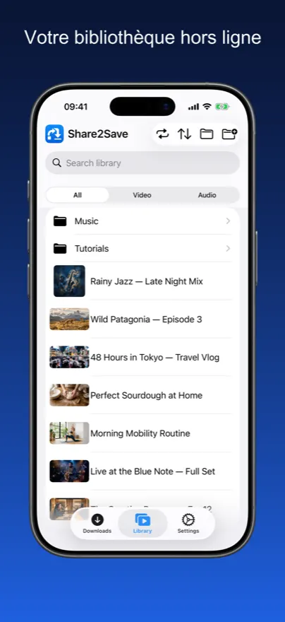
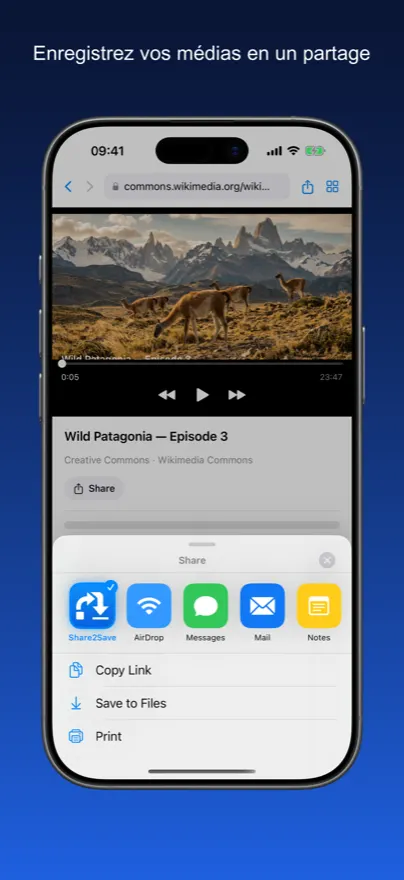
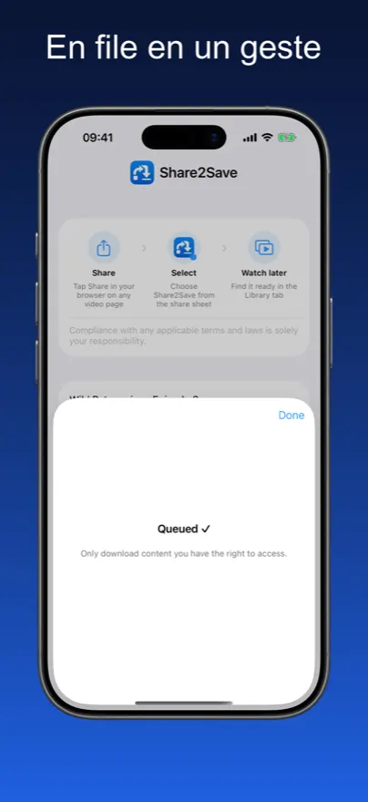
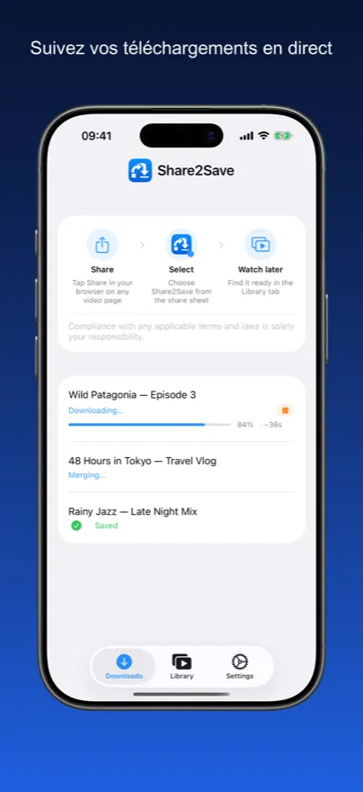
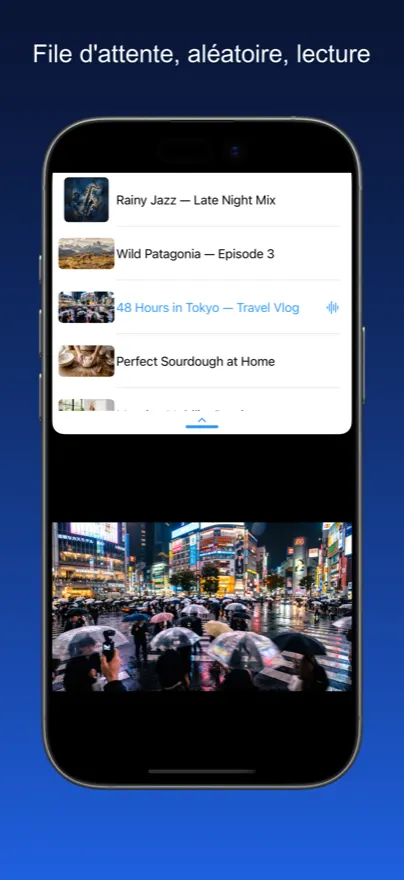
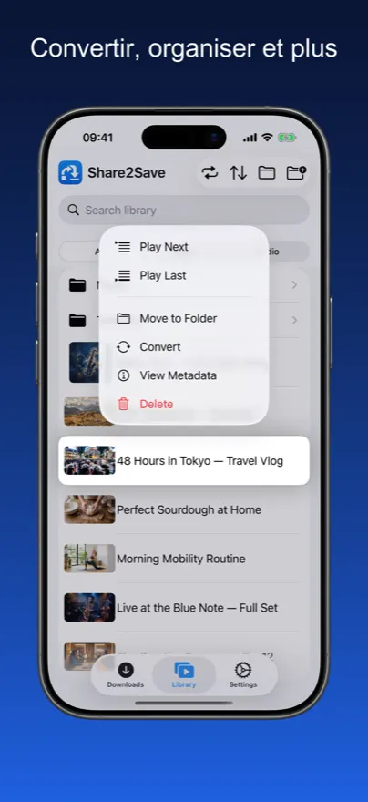
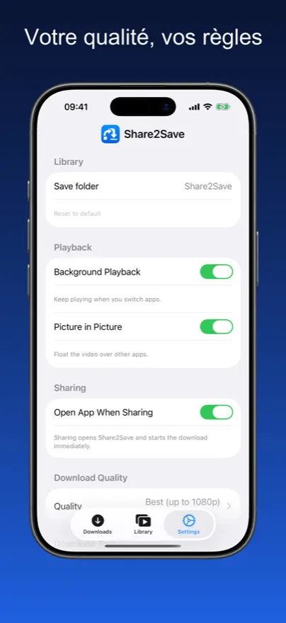

Votre bibliothèque hors ligne.
À partir de n'importe quel lien.
Enregistrez vidéos et audio depuis n'importe quel lien dans votre bibliothèque personnelle et regardez-les partout, à tout moment — sans mise en mémoire tampon, sans connexion.
Votre Bibliothèque Multimédia Hors Ligne
Vraies captures d’écran — enregistrez un lien, regardez hors ligne, gérez votre bibliothèque.







Du lien à la bibliothèque en 3 gestes

Appuyez sur Partager
Dans Safari, Chrome ou Firefox, appuyez sur le bouton Partager et sélectionnez Share2Save depuis la feuille de partage.
Téléchargement en cours
Share2Save télécharge la vidéo ou l’audio en arrière-plan, même après avoir fermé l’app.
Regardez hors ligne
Ouvrez votre bibliothèque à tout moment — sans Internet. Reprenez exactement où vous vous étiez arrêté.
Conçu pour le hors ligne. Conçu pour la confidentialité.
Chaque fonctionnalité a été conçue pour un seul objectif : vos médias, disponibles quand vous en avez besoin.
Bibliothèque multimédia personnelle
Parcourez tout le contenu enregistré dans une bibliothèque claire avec des onglets séparés Vidéo et Audio.
Enregistrer en un clic
Partagez n’importe quelle URL vidéo ou audio depuis Safari, Chrome ou Firefox directement vers Share2Save. Le téléchargement commence immédiatement.
Téléchargements en arrière-plan
Les téléchargements continuent pendant que vous changez d’app, verrouillez votre écran ou faites autre chose.
Widget écran verrouillé
Un widget Live Activity affiche la progression du téléchargement directement sur votre écran verrouillé. Nécessite iOS 16.2+.
Image dans l’image
Faites apparaître la vidéo dans une fenêtre flottante et continuez à regarder en utilisant d’autres apps.
Contrôle de la qualité
Choisissez la meilleure qualité disponible, 1080p MP4, 720p ou audio uniquement. Réglez une fois dans Réglages.
La confidentialité d’abord
Aucun compte requis. Aucune pub. Aucun suivi. Tout est stocké localement sur votre appareil.
Tout ce dont vous avez besoin, rien de plus
Vos médias. Votre appareil. Vos règles.
Pas de cloud. Pas d’abonnement. Pas de compromis.
Fonctionne en avion
Téléchargez avant de voler et regardez des playlists entières à 10 000 mètres sans payer le Wi-Fi.
Économise les données mobiles
Téléchargez une fois en Wi-Fi, regardez à l’infini sans consommer votre forfait données.
Expérience plein écran
Lecture plein écran immersive avec support Picture in Picture pour un vrai multitâche.
Zéro suivi
Pas d’analytics, aucune donnée envoyée. Vos habitudes de visionnage sont votre affaire.
Lecture instantanée
Pas de mise en mémoire tampon, pas de chargement. Les fichiers sont lus depuis le stockage local à pleine vitesse, instantanément.
Disponible en 10+ langues
L’app est entièrement localisée pour que l’interface soit naturelle partout dans le monde.
Questions Fréquemment Posées
Share2Save fonctionne avec une large gamme d’URL vidéo et audio — dont YouTube, Vimeo et de nombreux podcasts. Les plateformes protégées par DRM (comme Netflix ou Spotify) ne peuvent pas être téléchargées. Share2Save est conçu pour le contenu auquel vous avez le droit d’accéder.
Oui. Share2Save utilise la technologie iOS Background URL Session pour que les téléchargements continuent même quand vous changez d’app ou verrouillez votre écran. Sur iOS 16.2 et versions ultérieures, un widget Live Activity sur votre écran verrouillé affiche la progression en temps réel.
Entièrement à votre choix. Choisissez les paramètres de qualité pour équilibrer taille de fichier et qualité : 1080p MP4 pour la meilleure qualité, 720p comme compromis, ou audio uniquement pour un stockage minimal. Vous pouvez supprimer les fichiers enregistrés à tout moment.
Complètement local. Share2Save ne requiert aucun compte et n’envoie aucune donnée nulle part. Les fichiers téléchargés sont stockés entièrement sur votre appareil et ne sont jamais chargés ou partagés. Rien ne quitte votre téléphone.
Oui — c’est tout l’intérêt. Une fois un fichier téléchargé, il est disponible indéfiniment sans connexion Internet. Parfait pour les vols, les trajets ou partout où vous avez des données limitées.
Oui. Pas d’abonnement, pas d’achats intégrés, pas de pub. Share2Save est entièrement gratuit.
Vos médias. Partout. Hors ligne.
Téléchargez Share2Save gratuitement sur iPhone et iPad.
Télécharger sur l’App StoreGratuit · iPhone & iPad · iOS 16+